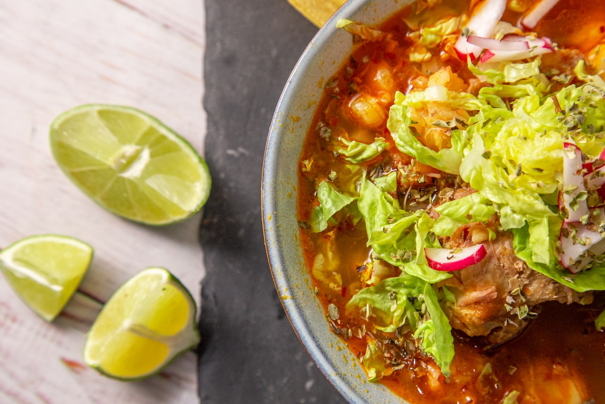

Pozole

Description
Ever had menudo and loved everything but the tripe?
Well today we are going to learn how to make pozole!
It has that authentic Mexican flavor and none of the flavors we don't want.
Ingredients
- Pork shoulder
- Onions
- Garlic
- Bay leaves
- Oregano
- Chile powder
- Hominy
- Radishes
- Lime
- Cilantro
- Avocado
- Tortillas
Steps
- Boil the pork
- Make the sauce
- Combine the pork and sauce
- Add the hominy
- Simmer
- Enjoy!